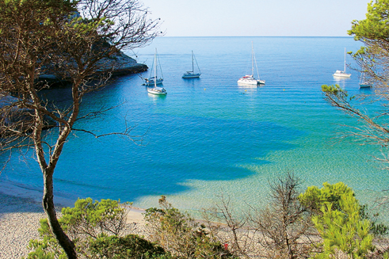

ТУРИЗМ И ПЛЯЖИ. Обязательства перед окружающей средой
 Развитие туризма возможно без нанесения ущерба природному и культурному наследию. Стремление к этому в настоящем благотворно отразится на будущем. Сознательный бережный эко-туризм – вот термин, определяющий данное течение. На Менорке его концепция окончательно укрепилась в 1993 году, когда ЮНЕСКО провозгласило остров «Биосферным заповедником».
Развитие туризма возможно без нанесения ущерба природному и культурному наследию. Стремление к этому в настоящем благотворно отразится на будущем. Сознательный бережный эко-туризм – вот термин, определяющий данное течение. На Менорке его концепция окончательно укрепилась в 1993 году, когда ЮНЕСКО провозгласило остров «Биосферным заповедником».
С социальной точки зрения туризм удовлетворяет потребности людей в путешествиях, в познании новых для них мест, культур и занятий. Среди наиболее ценных аспектов туристического направления выделяют гостеприимство местных жителей, гастрономию, культурные достопримечательности, красоту пейзажей, состояние природы и в особенности пляжей. Менорка обладает всеми этими качествами.
 Без бережного отношения к окружающей среде не может быть качественного туризма, именно поэтому туристический сектор направляет в настоящее время много сил на поддержание и сохранность хрупкого экологического равновесия острова. Сознательное участие в этом процессе и ответственность руководителей и туристических компаний, наряду с культурными, технологическими и профессиональными инновациями, являются основными приоритетами в этой новой стратегии, призванной сохранить качество Менорки как туристического направления и удовлетворить новые потребности туристов XXI века.
Без бережного отношения к окружающей среде не может быть качественного туризма, именно поэтому туристический сектор направляет в настоящее время много сил на поддержание и сохранность хрупкого экологического равновесия острова. Сознательное участие в этом процессе и ответственность руководителей и туристических компаний, наряду с культурными, технологическими и профессиональными инновациями, являются основными приоритетами в этой новой стратегии, призванной сохранить качество Менорки как туристического направления и удовлетворить новые потребности туристов XXI века.